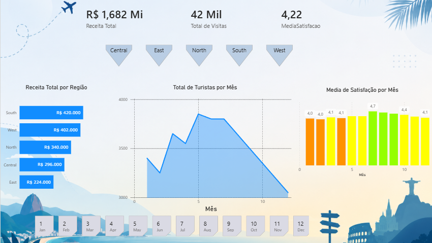
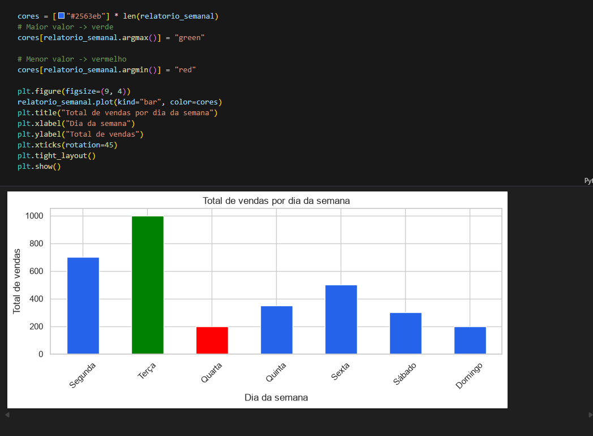

Data Analyst • Business Intelligence • Power BI • SQL
Rafael Liger
Transformando dados em decisões estratégicas por meio de análises, dashboards interativos e soluções orientadas por dados.

Disponível para oportunidades
Sobre mim
Construindo soluções analíticas com foco em valor de negócio.
Atualmente curso Análise e Desenvolvimento de Sistemas pela Uniasselvi e estou em transição de carreira para a área de Dados. Desenvolvo projetos práticos utilizando Python, SQL, Power BI e Excel, aplicando técnicas de ETL, Análise Exploratória de Dados (EDA), modelagem de dados e construção de dashboards interativos voltados à tomada de decisão.
Meu objetivo é transformar dados em informações estratégicas por meio da criação de indicadores, visualizações e análises capazes de gerar valor para o negócio. Tenho interesse em Business Intelligence, Data Analytics, Engenharia de Dados e Visualização de Dados.
Stack principal
Tecnologias com as quais trabalho e estudo.
SQL
Power BI
Excel
Pandas
NumPy
Matplotlib
Seaborn
Git
GitHub
Jupyter
Power Query
DAX
ETL
Projetos
Projetos práticos com foco em análise e storytelling com dados.

2025
Dashboard de Turismo em Power BI
Estruturação de um dashboard para análise de turismo com foco em KPIs, filtros e visualização de indicadores.
Power BI
Power Query
Excel
DAX
KPIs

2026
Análise Exploratória de Dados de Vendas
Projeto com Python e bibliotecas de análise para explorar padrões, distribuição e tendências de vendas.
Python
Pandas
Matplotlib
Seaborn
Jupyter Notebook
Em breve
Dashboard Comercial
Em desenvolvimento com foco em métricas comerciais, performance e automação de relatórios.
Power BI
SQL
ETL
8+
Projetos Desenvolvidos
14
Tecnologias
3
Dashboards
350+
Horas de Estudo
120+
GitHub Commits
Timeline
Minha evolução em tecnologia, dados e projetos.
2025
ADS - Uniasselvi
Estudos em desenvolvimento de sistemas com foco em lógica, banco de dados e soluções orientadas por dados.
2026
Projetos Power BI
Construção de dashboards com modelagem, métricas e visualizações orientadas à tomada de decisão.
2026
Projetos Python
Exploração de dados com Python, limpeza, análise exploratória e criação de insights acionáveis.
2026
GitHub Portfolio
Organização de projetos e evolução contínua em um portfólio público voltado para oportunidades de dados.
Competências
Áreas que entregam valor real para negócios e times de dados.
Business Intelligence
Power BI
Python
SQL
Excel
Data Visualization
ETL
Data Cleaning
Data Analytics
EDA
KPIs
Dashboard
Power Query
DAX
Git
GitHub
Contato